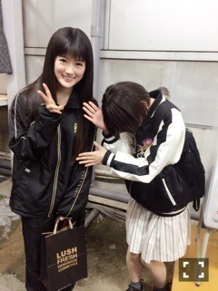

| 2016/03 22 Tue | 生駒里奈 俺の心を癒してくれるのは君だから。 |
いえーい
いこまでーす！！
いえーい
うぇいうぇいいこまでーすヽ(・∀・)ノ
うん、
テンション！
テンションキモいよテンション！
最近は現実世界に浸りまくり！
毎日可愛くメイクしてるよ！
それは正しい事だけどいこまにはちょっとタイヘン☆
そんないこまの癒しといえばっ！
そう趣味の世界に入り浸る事！！
最近は改めてジャズダンスやりたくて身体を動かしているよ！
それもすごーくリフレッシュできるヽ(・∀・)ノ
あとはあとはっ！
行って来ましたよ
學蘭歌劇 帝一の國
今回はひなちま回〜ヽ(・∀・)ノヽ(・∀・)ノ
何気ひなちま美美子初めてみるの！！

写真撮ってもらった〜〜ヽ(・∀・)ノヽ(・∀・)ノヽ(・∀・)ノヽ(・∀・)ノヽ(・∀・)ノヽ(・∀・)ノ
ひなちま舞台でもだけど至近距離美美子すぎて惚れました！
わっ！本物いたっ！
ってなった！
僕も好きだー！
愛してる〜(´；ω；｀)⭐️⭐️
第１章から観させて頂きました！
原作も舞台も大好きな作品が最終章は寂しいですが、
観れてよかった〜ヽ(・∀・)ノ
役者さん達のパワーを受け取り、
いろんな方々のこだわりや素晴らしさが凝縮した舞台をみて私は明日も明後日も生きて行く力をもらいましたヽ(・∀・)ノ
尊敬です！
人を楽しませる人って本当に凄いなぁ
私も早く本物になりたい！
頑張ります！！
あと映画も観たよ
中村明日美子先生の作品
同級生
よき時間が流れました〜ヽ(・∀・)ノ
暗殺教室も週刊少年ジャンプで完結してしまったし。
作品にも出会いと別れがある季節〜
漫画とかはまた観れるかも知れないけど
リアルタイムでやっている今を楽しむのが一番好きなタイプです。
明日も早いですヽ(・∀・)ノ
夢で好きなキャラクターいっぱい出てきますように。
へばなっ☆彡